<!doctype html>
<!-- @FoilTCG X profile banner (x-profile-banner, 2026-07-02; petal-fidelity-pass
     same day: petals from the shared shape library — components/lines/
     petal-shapes.ts — at STATIC-ASSET sizes (a static frame needs more shape
     fidelity than the live page, motion can't help it), two-stop gradient
     fills, one blossom per variant, and the wordmark a full step bigger.
     The PETAL_PATHS/BLOSSOM constants below are byte-synced to the TS module
     by lib/__tests__/visual-regression.test.ts — edit them THERE first.
     Composed from the site's own ingredients: charcoal ground (#0d0d0e/
     #17171a), the hero card fan (self-hosted webp), the Shrikhand "Foil"
     wordmark. Three 1500x500 variants + a safe-area verification block
     (X avatar mock bottom-left + center-60% text rule). Screenshot artifact
     only - never shipped. Shot natively at 1x/2x/3x via deviceScaleFactor
     (design-loop/banner/shoot-banner.mjs) - no CSS upscaling anywhere. -->
<html>
<head>
<meta charset="utf-8">
<link href="https://fonts.googleapis.com/css2?family=Shrikhand&family=Fraunces:opsz,wght@9..144,400;9..144,600&display=block" rel="stylesheet">
<style>
  :root {
    --night: #0d0d0e;
    --night-2: #17171a;
    --cream: #f8f5f0;
    --sakura: #d98aa0;
  }
  body { margin: 0; background: #333; }
  .banner {
    position: relative; width: 1500px; height: 500px; overflow: hidden;
    background: var(--night); margin-bottom: 24px;
  }
  .wordmark {
    font-family: "Shrikhand"; color: var(--cream); line-height: 1;
    letter-spacing: -0.01em;
  }
  .tagline {
    font-family: "Fraunces"; font-weight: 400; color: rgba(248,245,240,0.72);
  }
  .card {
    position: absolute; border-radius: 14px; overflow: hidden;
    box-shadow: 0 14px 44px -14px rgba(248,245,240,0.22);
    outline: 1px solid rgba(248,245,240,0.14);
  }
  .card img { display: block; width: 100%; height: auto; }
  .focal {
    box-shadow: 0 18px 70px -12px rgba(217,138,160,0.4), 0 12px 40px -10px rgba(248,245,240,0.3);
    outline: 1.5px solid rgba(217,138,160,0.45);
  }
  .petal { position: absolute; }
  .petal.far { filter: blur(1px); }
  .spill {
    position: absolute; inset: 0; pointer-events: none;
    background: radial-gradient(ellipse 50% 70% at 68% 40%, rgba(248,245,240,0.06), transparent 65%);
  }
  /* Safe-area debug overlays */
  .avatar-mock {
    position: absolute; left: 60px; bottom: -70px; width: 140px; height: 140px;
    border-radius: 50%; background: rgba(255,255,255,0.25);
    outline: 4px dashed rgba(255,255,255,0.6);
  }
  .center-60 {
    position: absolute; top: 0; bottom: 0; left: 20%; right: 20%;
    outline: 2px dashed rgba(217,138,160,0.5);
  }
</style>
</head>
<body>
<script>
// ONE copy of the shared petal geometry (byte-synced to
// components/lines/petal-shapes.ts by the visual-regression guard).
const PETAL_PATHS = {
  classic: "M12 22.4 C10.4 20.8 7.4 17.6 6.5 13.4 C5.6 9.2 7.4 4.9 9.9 2.1 C10.8 3.4 11.5 4.8 12 6.6 C12.5 4.8 13.2 3.4 14.1 2.1 C16.6 4.9 18.4 9.2 17.5 13.4 C16.6 17.6 13.6 20.8 12 22.4 Z",
  curl: "M11 22.4 C9 20.4 6.6 16.8 6.4 12.6 C6.2 8.4 8.2 4.3 10.9 1.7 C11.5 3 12 4.3 12.3 5.9 C13.2 4 14.6 2.4 16.3 1.5 C17.9 4.6 18.5 9 17.3 13.1 C16.1 17.2 13.4 20.7 11 22.4 Z",
  slender: "M12 22.6 C10.8 21 8.9 17.7 8.5 13.2 C8.1 8.8 9.6 4.4 11.2 1.8 C11.6 3 11.8 4.2 12 5.6 C12.2 4.2 12.4 3 12.8 1.8 C14.4 4.4 15.9 8.8 15.5 13.2 C15.1 17.7 13.2 21 12 22.6 Z",
};
const BLOSSOM_PETAL_PATH = "M12 13 C10.2 11.8 9 9.4 9.4 6.8 C9.7 4.9 10.5 3.1 11.1 2.2 C11.5 2.9 11.8 3.7 12 4.6 C12.2 3.7 12.5 2.9 12.9 2.2 C13.5 3.1 14.3 4.9 14.6 6.8 C15 9.4 13.8 11.8 12 13 Z";
const TONE = { center: "#f0c3d0", edge: "#c9718c" }; // night tone

let uid = 0;
function petal(x, y, size, rot, opacity, shape = "classic", far = false) {
  const id = "pg" + (uid++);
  return `<svg class="petal ${far ? "far" : ""}" style="left:${x}px; top:${y}px; opacity:${opacity};" width="${size}" height="${size}" viewBox="0 0 24 24">
    <defs><radialGradient id="${id}" cx="50%" cy="46%" r="70%">
      <stop offset="0%" stop-color="${TONE.center}"/><stop offset="100%" stop-color="${TONE.edge}"/>
    </radialGradient></defs>
    <path d="${PETAL_PATHS[shape]}" fill="url(#${id})" stroke="${TONE.edge}" stroke-width="0.7" transform="rotate(${rot} 12 12)"/>
  </svg>`;
}
function blossom(x, y, size, rot, opacity) {
  const id = "bg" + (uid++);
  const petals = [0, 72, 144, 216, 288]
    .map((a) => `<path d="${BLOSSOM_PETAL_PATH}" fill="url(#${id})" stroke="${TONE.edge}" stroke-width="0.7" transform="rotate(${a + rot} 12 13)"/>`)
    .join("");
  return `<svg class="petal" style="left:${x}px; top:${y}px; opacity:${opacity};" width="${size}" height="${size * (26 / 24)}" viewBox="0 0 24 26">
    <defs><radialGradient id="${id}" cx="50%" cy="50%" r="62%">
      <stop offset="0%" stop-color="${TONE.center}"/><stop offset="100%" stop-color="${TONE.edge}"/>
    </radialGradient></defs>
    ${petals}<circle cx="12" cy="13" r="1.5" fill="${TONE.edge}"/>
  </svg>`;
}

// VARIANT A: wordmark left + tagline, fan bleeding off the right, hanami
// weather across the open left/top field (text zone kept clear).
document.write(`
<div class="banner" id="a">
  <div class="spill"></div>
  ${blossom(214, 48, 42, 12, 0.9)}
  ${petal(60, 60, 34, -24, 0.9, "classic")}
  ${petal(130, 150, 24, 48, 0.7, "curl")}
  ${petal(330, 40, 28, 15, 0.8, "classic")}
  ${petal(470, 84, 22, -58, 0.7, "slender")}
  ${petal(610, 44, 30, 70, 0.85, "classic")}
  ${petal(760, 92, 24, -30, 0.7, "curl")}
  ${petal(880, 50, 20, 40, 0.6, "classic")}
  ${petal(90, 280, 26, 62, 0.65, "curl")}
  ${petal(180, 380, 30, -44, 0.7, "classic")}
  ${petal(300, 430, 22, 26, 0.6, "slender")}
  ${petal(520, 420, 26, -70, 0.65, "classic")}
  ${petal(730, 440, 20, 52, 0.55, "curl")}
  ${petal(905, 300, 24, -16, 0.6, "classic")}
  ${petal(250, 210, 14, 34, 0.45, "classic", true)}
  ${petal(560, 150, 13, -50, 0.4, "curl", true)}
  ${petal(700, 250, 12, 20, 0.4, "classic", true)}
  ${petal(850, 170, 14, 64, 0.42, "slender", true)}
  ${petal(400, 330, 12, -36, 0.38, "classic", true)}
  <!-- Fan bleeding off the right edge; Moonbreon focal w/ sakura rim. -->
  <div class="card" style="right:388px; top:120px; width:180px; transform:rotate(-9deg); filter:brightness(.72) blur(.6px); z-index:1;">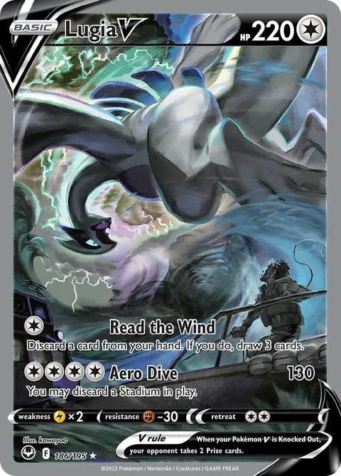</div>
  <div class="card" style="right:265px; top:85px; width:200px; transform:rotate(-4deg); filter:brightness(.88); z-index:2;">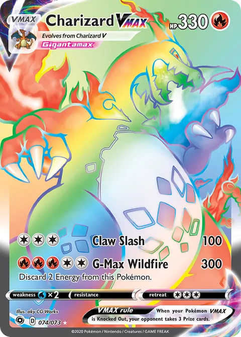</div>
  <div class="card focal" style="right:105px; top:45px; width:250px; transform:rotate(1deg); z-index:3;">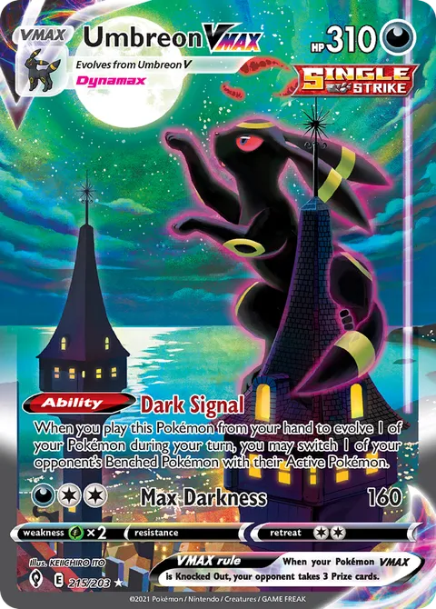</div>
  <div class="card" style="right:-40px; top:90px; width:205px; transform:rotate(7deg); filter:brightness(.85); z-index:2;">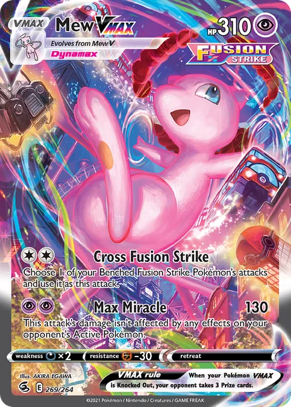</div>
  <div class="card" style="right:-135px; top:140px; width:180px; transform:rotate(13deg); filter:brightness(.6) blur(1px); z-index:1;">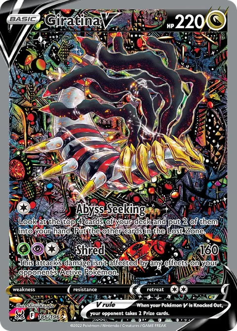</div>
  <div style="position:absolute; left:320px; top:128px; z-index:4;">
    <div class="wordmark" style="font-size:168px;">Foil</div>
    <div class="tagline" style="font-size:34px; margin-top:20px;">Real sold prices, not asking prices.</div>
  </div>
</div>`);

// VARIANT B: centered wordmark over a wide shallow fan, hanami in the open
// top corners and side fields.
document.write(`
<div class="banner" id="b">
  <div class="spill" style="background: radial-gradient(ellipse 55% 65% at 50% 100%, rgba(217,138,160,0.08), transparent 70%);"></div>
  ${blossom(150, 56, 40, -8, 0.9)}
  ${blossom(1310, 120, 30, 24, 0.75)}
  ${petal(60, 190, 30, -30, 0.85, "classic")}
  ${petal(130, 320, 24, 52, 0.7, "curl")}
  ${petal(250, 120, 26, 70, 0.75, "classic")}
  ${petal(320, 260, 20, -15, 0.6, "slender")}
  ${petal(230, 420, 26, 38, 0.65, "classic")}
  ${petal(420, 60, 24, 10, 0.7, "curl")}
  ${petal(660, 36, 28, -46, 0.8, "classic")}
  ${petal(900, 56, 22, 30, 0.65, "curl")}
  ${petal(1080, 40, 26, -62, 0.75, "classic")}
  ${petal(1180, 210, 24, 44, 0.7, "classic")}
  ${petal(1290, 320, 28, -22, 0.75, "curl")}
  ${petal(1400, 200, 22, 60, 0.65, "classic")}
  ${petal(1360, 420, 24, -40, 0.6, "slender")}
  ${petal(1440, 60, 26, 18, 0.7, "classic")}
  ${petal(380, 170, 13, -55, 0.42, "classic", true)}
  ${petal(540, 110, 12, 25, 0.4, "curl", true)}
  ${petal(960, 130, 14, -12, 0.42, "classic", true)}
  ${petal(1120, 280, 12, 66, 0.38, "slender", true)}
  ${petal(200, 240, 12, -70, 0.38, "classic", true)}
  <!-- Wide shallow fan along the bottom, mostly submerged. -->
  <div class="card" style="left:290px; bottom:-150px; width:190px; transform:rotate(-12deg); filter:brightness(.6) blur(.8px);">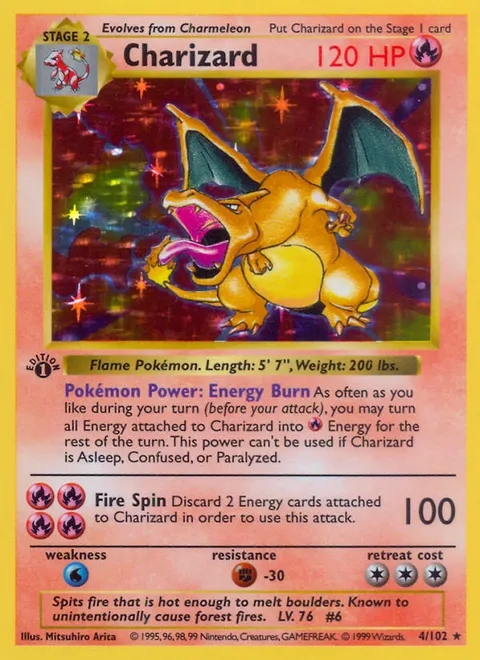</div>
  <div class="card" style="left:460px; bottom:-120px; width:200px; transform:rotate(-7deg); filter:brightness(.8);"></div>
  <div class="card focal" style="left:640px; bottom:-95px; width:220px; transform:rotate(0deg);"></div>
  <div class="card" style="left:850px; bottom:-120px; width:200px; transform:rotate(7deg); filter:brightness(.8);"></div>
  <div class="card" style="left:1030px; bottom:-150px; width:190px; transform:rotate(12deg); filter:brightness(.6) blur(.8px);">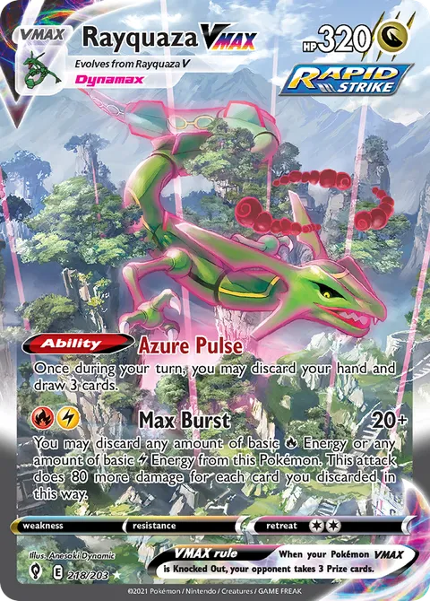</div>
  <div style="position:absolute; left:0; right:0; top:48px; text-align:center; z-index:4;">
    <div class="wordmark" style="font-size:176px;">Foil</div>
    <div class="tagline" style="font-size:30px; margin-top:12px;">Real sold prices, not asking prices.</div>
  </div>
</div>`);

// VARIANT C: Gen-1 IR binder strip + wordmark, petals drifting the left field.
document.write(`
<div class="banner" id="c">
  <div class="spill" style="background: radial-gradient(ellipse 45% 60% at 72% 50%, rgba(248,245,240,0.05), transparent 65%);"></div>
  ${blossom(200, 320, 36, 18, 0.85)}
  ${petal(90, 90, 32, -20, 0.9, "classic")}
  ${petal(190, 170, 22, 34, 0.7, "curl")}
  ${petal(300, 60, 26, -48, 0.75, "classic")}
  ${petal(480, 44, 24, 24, 0.7, "classic")}
  ${petal(620, 90, 20, -66, 0.6, "slender")}
  ${petal(120, 420, 26, 56, 0.7, "classic")}
  ${petal(330, 400, 22, -34, 0.6, "curl")}
  ${petal(560, 430, 24, 12, 0.6, "classic")}
  ${petal(680, 350, 18, 48, 0.5, "curl")}
  ${petal(420, 150, 13, -10, 0.42, "classic", true)}
  ${petal(250, 250, 12, 62, 0.4, "curl", true)}
  ${petal(590, 230, 13, -42, 0.4, "classic", true)}
  <!-- Binder strip: the SV-151 starter lines on a night-2 tray, right side. -->
  <div style="position:absolute; right:56px; top:74px; background:var(--night-2); border-radius:24px; padding:22px; display:flex; gap:14px; outline:1px solid rgba(248,245,240,0.1); box-shadow:0 24px 60px -28px rgba(4,9,18,0.85);">
    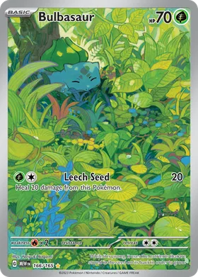
    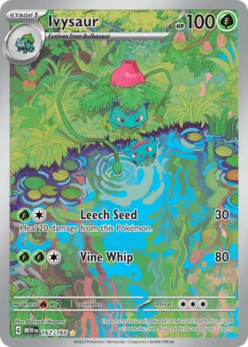
    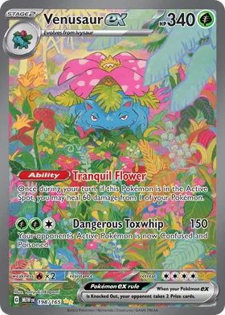
    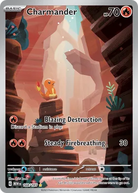
    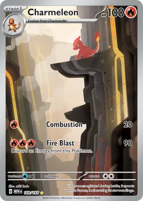
    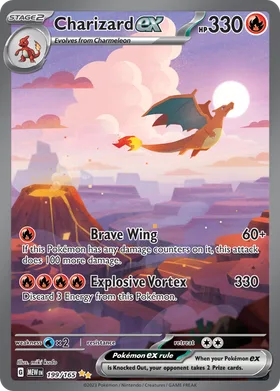
  </div>
  <div style="position:absolute; left:300px; top:130px; z-index:4;">
    <div class="wordmark" style="font-size:150px;">Foil</div>
    <div class="tagline" style="font-size:30px; margin-top:18px; max-width:640px;">Every card, tracked against what it actually sells for.</div>
  </div>
</div>`);

// SAFE-AREA CHECK: variant A + X avatar mock (bottom-left) + center-60% frame.
document.write(`
<div class="banner" id="safe">
  <div class="spill"></div>
  ${blossom(214, 48, 42, 12, 0.9)}
  ${petal(60, 60, 34, -24, 0.9, "classic")}
  ${petal(610, 44, 30, 70, 0.85, "classic")}
  ${petal(180, 380, 30, -44, 0.7, "classic")}
  <div class="card" style="right:265px; top:85px; width:200px; transform:rotate(-4deg); filter:brightness(.88); z-index:2;"></div>
  <div class="card focal" style="right:105px; top:45px; width:250px; transform:rotate(1deg); z-index:3;"></div>
  <div class="card" style="right:-40px; top:90px; width:205px; transform:rotate(7deg); filter:brightness(.85); z-index:2;"></div>
  <div style="position:absolute; left:320px; top:128px; z-index:4;">
    <div class="wordmark" style="font-size:168px;">Foil</div>
    <div class="tagline" style="font-size:34px; margin-top:20px;">Real sold prices, not asking prices.</div>
  </div>
  <div class="avatar-mock"></div>
  <div class="center-60"></div>
</div>`);
</script>
</body>
</html>
